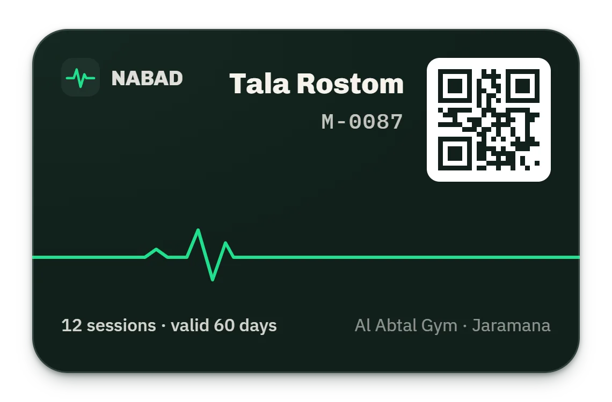
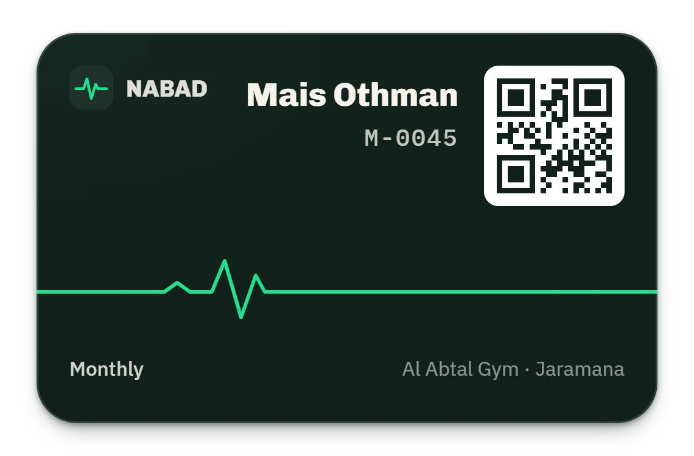
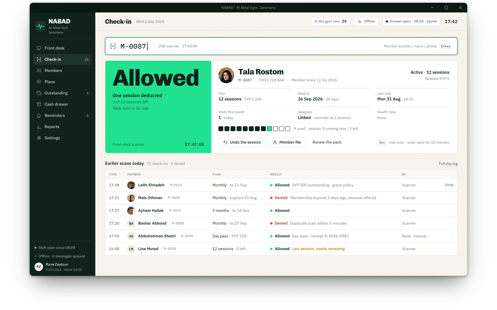
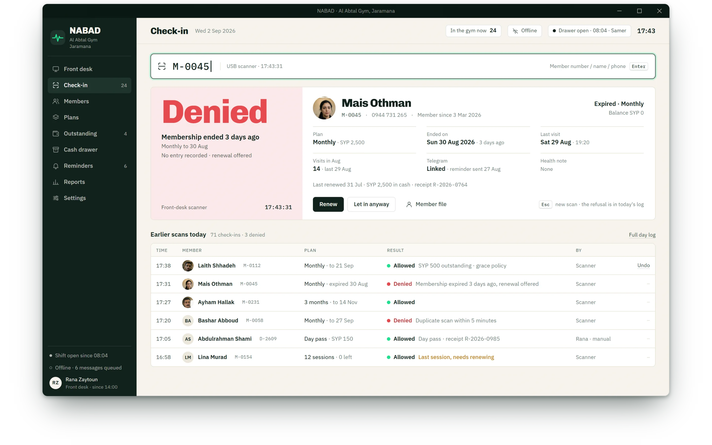

case 07 · nabad
NABAD
Nabad. A gym front desk that lets a member in in two seconds, no internet needed.
movement 01 · the scan





-
17:42
The desk waits. A card, a USB scanner, and a verdict expected in two seconds.
-
17:42:08
Tala's card: twelve sessions, three left. Allowed, in volt, readable from the door.
-
17:43:31
Mais's card: expired three days ago. Denied, in red, with the reason and one button: renew.
the story
An offline-first desktop app for one Syrian gym: a member in within two seconds, cash and installments in pounds, a drawer that closes with its variance, and reminders that wait for the line.
about the product
NABAD runs the whole front desk of one Syrian gym: members with QR cards, plans with freeze and renew, cash and installments with an 80 mm receipt, a drawer that closes with its variance, check-in with a verdict, and reminders over Telegram or SMS that queue until the line returns. Front desk only, offline first, sold per gym.
the challenge
- 01
A verdict in two seconds at a crowded door: allow or deny, with the reason, while the queue waits.
- 02
Cash and installments in Syrian pounds only, and a drawer that has to balance at 22:04.
- 03
Reminders without WhatsApp: Telegram and SMS through an outbox that survives the cut.
the approach
Electron with the whole domain in the main process over a typed bridge, one encrypted SQLite file, an append-only ledger, subscription states derived rather than stored, a durable outbox, and a runbook the desk can follow.
my role
Product owner, researcher and the only engineer: the market study, the PRD, the brand, the app, the test harness and the installer, in three weeks.
movement 02 · who owes, who is about to leave
Who owes, who is about to leave
At 17:43 the desk shows 23 inside, six subscriptions ending this week with the reminder already sent beside each name, and four members who owe 4,750. Laith's file beside it keeps the ledger honest: 2,500 due, 1,500 paid on the 22nd, 500 on the 29th, 500 still owed.
 expiring this week, reminders already sent
expiring this week, reminders already sent
 1,500 then 500 of 2,500: 500 still owed
1,500 then 500 of 2,500: 500 still owed
The owner's notebook, digitized. Cash, the queue and the power cuts, all assumed.
movement 03 · 22:04 · the drawer and the outbox
22:04 · the drawer and the outbox
At 22:04 Rana closes shift #142: 2,000 float, 12,250 in cash, 450 out for the water bill, 13,800 expected, 13,750 counted. The 50 deficit is written into the Z report, not argued. Next door the outbox has been offline since 16:12 with six messages waiting; they go out, Telegram first, when the line returns.
 expected 13,800, counted 13,750: a 50 deficit, written down
expected 13,800, counted 13,750: a 50 deficit, written down
 six queued; they leave when the line returns
six queued; they leave when the line returns
/ outcomes
seconds to a verdict
allow or deny, with the reason
days before expiry, the reminder goes out
Telegram first, SMS if it must
gym per licence, owned outright
a key signed offline, no subscription
case 07 · complete
the field of the next chapter floods the screen